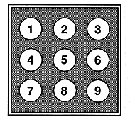

When this button is pressed, the saved data management screen for managing the saved data of the game is displayed.
Press this button to clear the multiplayer screen and display the background screen (screen saver). (During CD + G playback, the CD + G graphic is displayed instead of the background screen)
Press briefly to skip one song at a time, and press long to search.
Press briefly to skip one song at a time, and press long to search.
Switches between 1-track repeat / all-track repeat / release.
Switches between the main button and option button of the operation button.